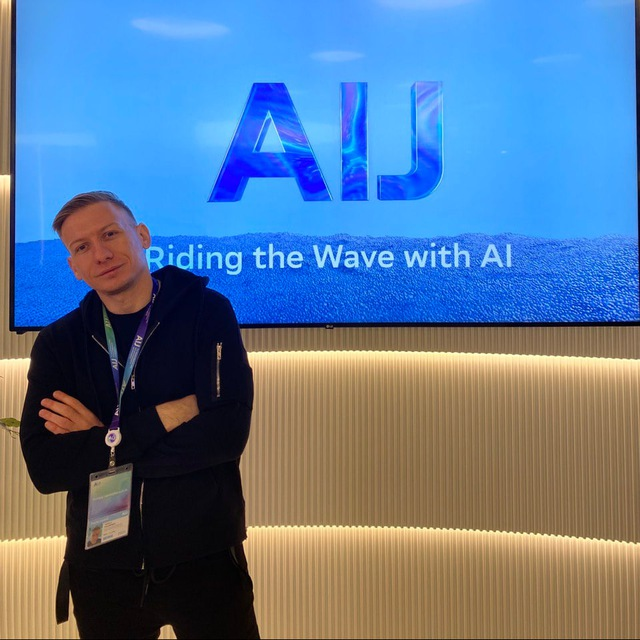

AI Architecture & Discovery
From use-case framing and C4 system design to delivery planning, integration constraints, and technical strategy.
LLM applications, agentic workflows, RAG platforms, multimodal systems, and custom computer vision solutions — from discovery and architecture to deployment, integration, and handover.

I help teams turn AI capabilities into working systems aligned with business goals, infrastructure realities, and long-term maintainability.
From use-case framing and C4 system design to delivery planning, integration constraints, and technical strategy.
RAG platforms, tool-using agents, multi-agent workflows, evaluation loops, and production-oriented orchestration.
Self-hosted inference, open-source model serving, vector databases, Kubernetes-based deployment, and controllable AI infrastructure.
Detection, segmentation, classification, and multimodal pipelines connected to operational reporting and decision support.
A mix of enterprise-style delivery and public technical projects that reflect architecture, implementation, and production thinking.
Computer vision system for geological core analysis with detection, segmentation, and classification to identify potentially oil-bearing layers, plus an AI agent for structured geological reporting.
A multi-agent voice-enabled assistant for a public services platform, helping citizens navigate services, submit meter readings, book appointments, and complete workflows through conversation.
A self-hosted RAG platform for production-oriented enterprise workflows with multi-strategy retrieval and controllable infrastructure.
An end-to-end open-source pipeline covering fine-tuning, evaluation, export, and serving for open-source LLMs.
Strategy, systems thinking, and hands-on execution across the full AI delivery lifecycle.
Business goals, user workflows, deployment constraints, and success criteria.
Practical system design with clear trade-offs, integration paths, and delivery planning.
Fast movement from concept to MVP or pilot while keeping architectural clarity.
Reliability, observability, deployment model, and long-term maintainability.
Documentation, knowledge transfer, and solution readiness for internal teams.
Production-oriented tools and systems I use across architecture, serving, retrieval, and integration.
I work at the intersection of AI architecture, delivery, and hands-on implementation. My focus is turning AI capabilities into practical production systems: LLM platforms, agentic workflows, RAG systems, multimodal applications, and custom computer vision solutions.
I am especially interested in private and controllable AI infrastructure, open-source LLM ecosystems, and systems designed around real workflow constraints rather than demos.
Available for consulting, architecture work, contract delivery, technical leadership, and full-time opportunities.